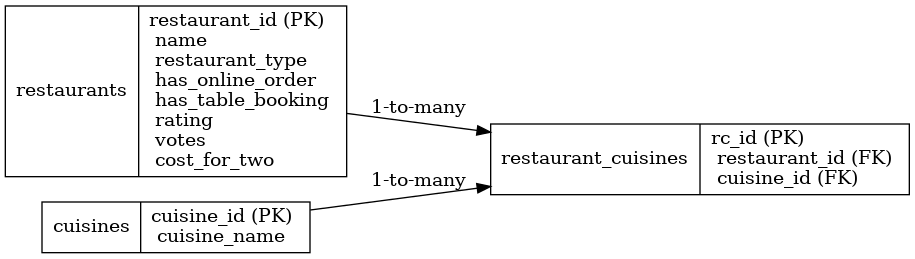

Problem: Raw restaurant data from Zomato was unstructured and difficult to analyze for key market trends. Action: I designed a relational database in MySQL, built a Python ETL pipeline to clean and load the data, and created an interactive Power BI dashboard. Result: The solution provides a clear view of the Bangalore food landscape, revealing that "Quick Bites" is the most dominant restaurant type and that a strong correlation exists between higher ratings and higher costs.
This project was designed to answer critical questions about the Bangalore restaurant market:
Total Restaurants Analyzed
Average Rating
Average Cost for Two
Total Unique Cuisines
The final insights are presented in an automatic two-page slideshow. The first page is an executive summary, while the second offers a deep dive analysis.
The project followed a 5-step process from database design to visualization.
The market is heavily saturated with "Quick Bites" restaurants, followed by "Casual Dining" establishments.
Nearly two-thirds (64.5%) of restaurants offer online ordering, indicating it's a vital service for market competition.
A clear positive correlation exists between a restaurant's rating and its cost, with top-rated venues typically being more expensive.
An overwhelming 88% of restaurants do not offer table booking, aligning with the prevalence of quick-service models.
The following CSV files are the direct outputs of the SQL analysis queries, providing the raw data behind the insights.
The project began with designing a normalized relational database in MySQL. A Python script was then used for the ETL process: extracting the raw CSV, cleaning and transforming the data with Pandas, and loading it into the database using SQLAlchemy.

Access the SQL scripts and the Python notebook used for this project.
This project successfully demonstrates an end-to-end data analysis workflow. By structuring raw data into a relational database and creating a user-friendly dashboard, complex trends become simple to understand. The findings provide a clear roadmap for any stakeholder interested in Bangalore's food industry, from identifying dominant market segments to understanding the crucial role of online services.